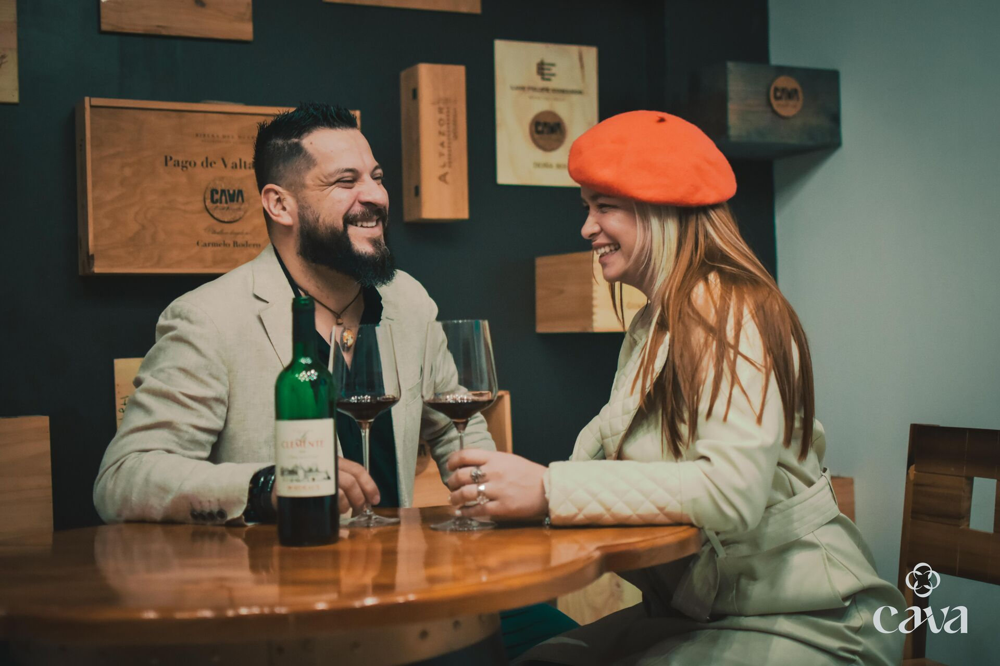
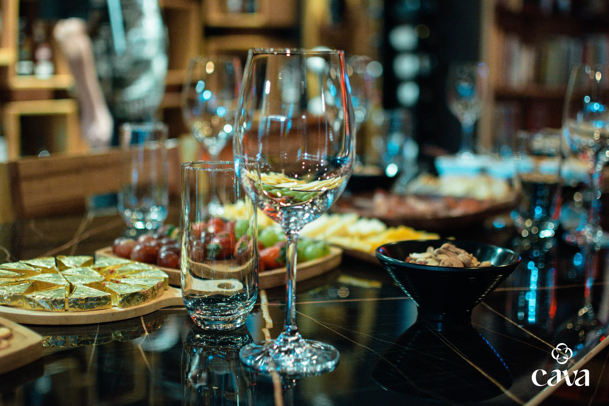
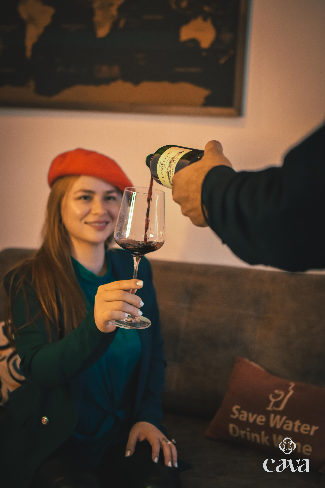
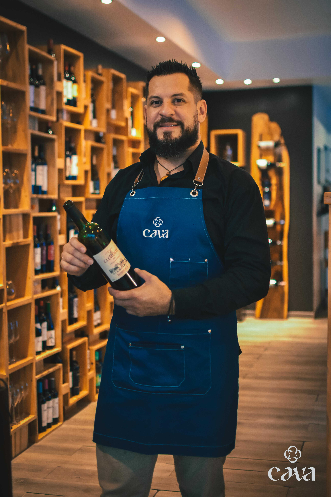
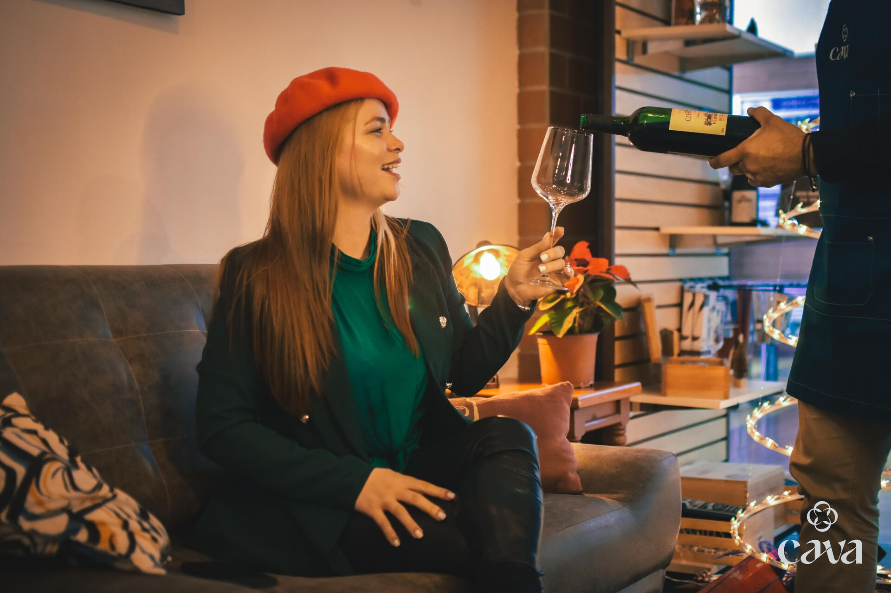

El Muro
Botellas en rotación constante. Siempre algo nuevo por descubrir.
Del muro a la mesa compartida
En Pérez Zeledón, cada botella elegida del muro encuentra su lugar en la mesa.
El sello de la casa

Nuestra esencia
CAVA nació de una idea sencilla: las mejores conversaciones empiezan alrededor de una mesa. Aquí el vino llega a la mesa para despertar algo más que la copa.
El muro cambia cada semana. Nunca hay dos noches iguales.
Algunas botellas regresan porque dejan una marca. Otras viven un solo momento.
El descorche no cierra un círculo. Abre la conversación.
After Office
Antes de entrar a esta mesa, una pregunta. No es un juego: es la forma en que empezamos cada velada.
¿Qué hace memorable una botella?
Cada invitado elige una botella del muro para compartirla con la mesa. Nazareth y Erick acompañan el descorche, dosifican el servicio y convierten cada botella en conversación.
No es una cata tradicional. Es un ritual compartido que se mide por el momento, no por la botella.
Botellas en rotación constante. Siempre algo nuevo por descubrir.
Una mesa larga, botellas compartidas y conversaciones que nacen entre descorches.
Platos al centro, comida hecha en casa y hospitalidad real.


Los anfitriones
Nazareth Padilla recuerda lo que cada persona ha descubierto. Erick Sandi piensa cada descorche según el momento. Entre ambos, CAVA se convierte en una casa donde el vino siempre conduce a algo más.

Comunicadora del vino
Su memoria para recordar lo que cada invitado ha probado vuelve cada encuentro más personal. Su manera de acompañar hace que el vino se sienta cercano.

Anfitrión de la mesa
Elige desde la tipicidad, el estilo y el momento. Su papel es cuidar que cada descorche tenga sentido dentro de la noche.
Nazareth Wine Journey
Nazareth Padilla Montero representa la visión educativa y sensorial detrás de CAVA Vinoteca. Su camino une hospitalidad, comunicación del vino y una mirada latinoamericana construida desde Costa Rica.

Comunicadora del vino
WSET Level 3 Wines
Becaria Women of the Vine & Spirits Foundation 2025
Fundadora de Nazareth Wine Journey
Ver mención oficial en WOTVS Foundation
Women of the Vine & Spirits Foundation
Ecosistema CAVA
CAVA Vinoteca se extiende más allá del espacio físico. Un universo de conversaciones, experiencias y conexiones que fortalecen la comunidad del vino en Costa Rica.
Encuéntranos en Pérez Zeledón, Costa Rica
Conversaciones diarias sobre vino y hospitalidad
La esencia visual de nuestras mesas compartidas
Podcast que explora historias detrás de cada botella
Reseñas de quienes han vivido la mesa con nosotros
Reservas
Cuéntanos qué buscas. Te ayudamos a reservar una mesa compartida, un After Office o un encuentro sensorial.